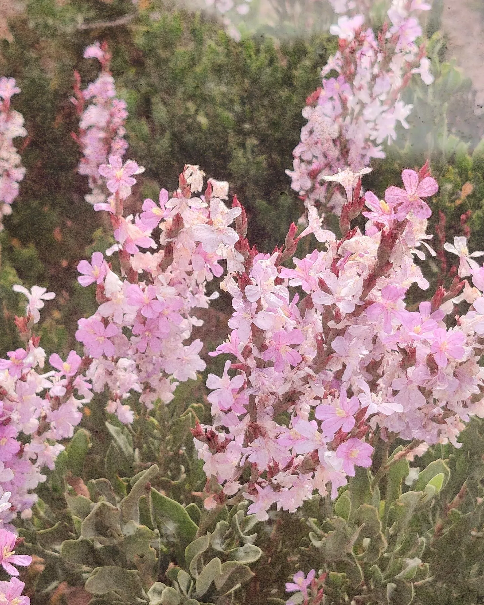

Portal Poem
The Writing Circles
A recurring practice of attention, imagination, and discovery.

Writing allows us to encounter something before we fully understand it.
An image appears. An unexpected association takes shape. A sentence reveals a thought we didn't know we were having.
Portal Poem Writing Circles are monthly gatherings devoted to the experience of writing as a creative and exploratory practice.
We work with invitations that open different ways of approaching language, memory, perception, and imagination.
The emphasis is on the act of making: following what emerges, experimenting with form, and allowing ourselves to discover something through the process.
There is room for the unfinished, the unexpected, the strange, and the work that has not yet found its direction.
The membership
- Monthly guided writing circles.
- Creative invitations and shared practice.
- An ongoing space for writing, imagination, and reflection.
The circles are a way to maintain a living relationship with your creative process, whether or not you are currently developing a larger project.

For whom?
For writers, artists, and anyone who wants to cultivate a deeper and more sustained relationship with writing and the imagination.
You do not need to identify as a professional writer.
Only to be curious about what might become possible when you begin.